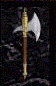

| Original Name | Nom Français |
| Ancient Broad Axe +3 | Hache antique des Hauts Elfes (+3) |
| Arme à deux mains |
|
 |
|
| Lieu |
| Zone Séraphe Makrsh P'Tangh |
| Bonus |
| - |
| Commentaires |
| 13 Commentaires |
Tidus
 Messages: 412 |
- Pour moi la meilleure arme du jeu  c'est un must question puissance et les coups assomants/puissants sont assez impressionants c'est un must question puissance et les coups assomants/puissants sont assez impressionants 
Posté le : 29-08-2003 02:22:13 |
|
Kerhuon Buglife
Messages: 12 |
- heu une tite question elle est a une ou deux mains
Posté le : 01-10-2003 06:58:54 |
|
Darkaal
Modérateur du Général et Liens Utiles
Messages: 975 |
- C\'est une épée à deux mains
Posté le : 03-10-2003 16:14:42 |
|
Sylvermoon
Femme Fatale
 Messages: 444 |
-
Enfin les haches sont toujours a deux mains !
Posté le : 10-10-2003 23:01:09 |
|
Akhilleus
Modérateur de Play et Ventes/echanges de personnages
Messages: 1525 |
- Oui elle est bien sympa mais loin d'etre la meilleure arme du jeu a vrai dire elle sert juste pour le skin et en pvp contre des persos ayant peu de pvs
Posté le : 28-10-2003 16:11:56 |
|
ToXi
Le Don Juan de LH
Messages: 132 |
fleo he svp en pvp le fleo he peut-il concurencer avec cette arme
Posté le : 17-11-2003 23:02:49 |
|
Tidus
Messages: 412 |
- ca dépend des stats qu'il y à deriére.
Posté le : 06-12-2003 12:01:06 |
Mage Archelune
 Messages: 74 |
- Le Fléau HE fait beaucoup moins de dégats que cette arme mais l'arme la plus puissante de T4C n'est pas la Hache HE mais l'Epée HE!
Posté le : 29-12-2003 01:11:11 |
Mat de Lock
 Messages: 96 |
Meilleure puissance par coup Cette arme a la meilleure puissance par coup, seulement plus lente que l'épée.
Posté le : 29-12-2003 10:15:21 |
|
Sigmar Avaroes
Défenseur des faibles
 Messages: 54 |
- c'est clair que c'est le seu problème de cette arme: sa vitesse. Point de vue dégats, elle déchire mais sa vitesse fait qu'elle passe après l'épée he. Mais rien que pourle skin, ca suffit!!
Posté le : 14-01-2004 16:40:26 |
|
Squalou
Banned
Messages: 68 |
- Meilleur Arme du Jeu question degat mais lépé HE va plus vite, Utile pour oneshoot les lvl 50 et pas mal pour achever un mec deja rouge
Posté le : 09-06-2004 10:48:58 |
|
Bad-Shadow
Messages: 109 |
- Je ne trouve pas que c'est la meilleur arme pvp,l'épée est mieux.
Enfin tout depend du perso car j'ai deja vu des palouf pété des gueriers en arme HE(palouf surboosté).
sinon je la trouve nul j'ai pété plusieurs mecs avec hache HE sans pb avec un archer + long et donc pour moi l'arc He reste meilleur.(fo pas croire meme si elle fait mal cette hache tu met peut etre 2 coup a 1k maxi alors qu avec l arc tu peu mettre 3*800 donc 2400 de degats. Et le temps de popoter entre les coup est trop simple donc pour moi cette arme vo rien)
Posté le : 15-06-2004 23:57:14 |